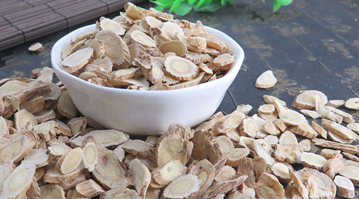

黄芪泡水肯定是不能长期喝的，虽然黄芪有着养身保健的作用但是黄芪长期喝肯定会对身体造成一定影响的。中医并不建议吃太多药，对症治疗，病好之后药物就可以不吃了。如果长期的和黄芪会出现上火，如果需要黄芪来降三高的，可以喝一段时间停一停再喝。

1、黄芪的功效
黄芪的功效有着补气、排脓。黄芪是一个补气药，人体大病初愈或者手术过后很容易出现气虚，像大病之后或者大型手术之后的患者可以用黄芪泡水喝，起到滋补身体的作用。虽然黄芪有着很好的补气的作用，但是最好不要长期连续的喝，并且使用黄芪泡水喝2个月就可以了。
2、黄芪的作用
现在研究发现黄芪泡水喝可以起到降糖、降脂、降高血压的功效。像糖尿病、高血压这类的慢性疾病都是需要长期使用药物的维持疾病的。慢性疾病患者使用黄芪这类中草药泡水喝，虽然可以长期喝但是并不能没有任何间断的每天喝。慢性疾病患者因为每天使用药物治疗，已经给身体带来了一定的负担，所以像黄芪这类辅助的药物，最好在连续喝上一个星期后，停几天再继续饮用。
3、黄芪不能长期喝
黄芪是不能长期泡水喝的，黄芪虽然是中草药，对身体的副作用较小，但是并不是没有副作用的。黄芪如果对症治疗疾病，药物作用在疾病上，如果身体健康长时间喝黄芪会引起上火和增强身体负担。